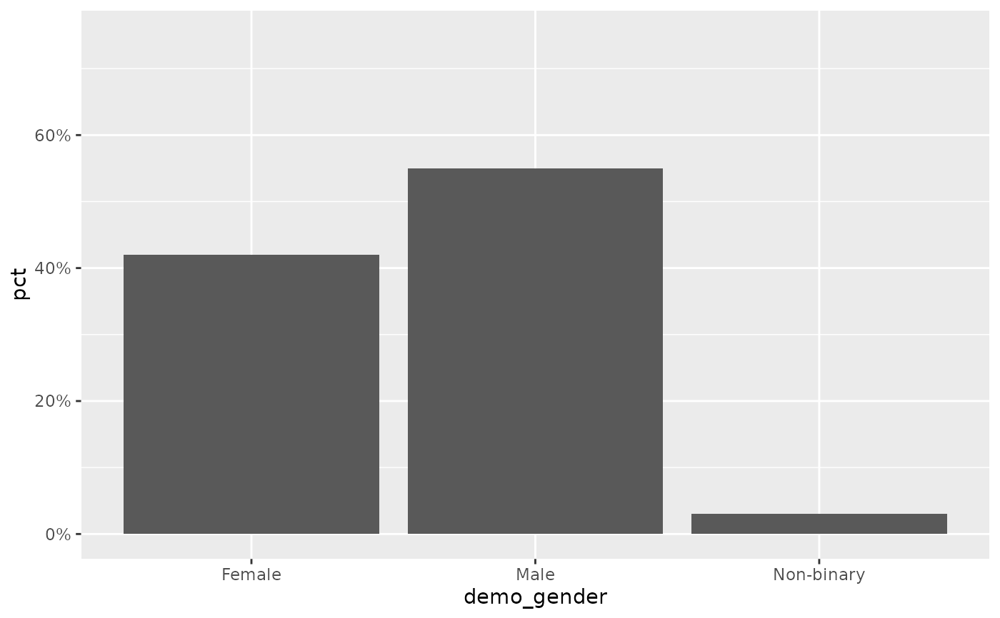

Continuous y-scale capped at a nice maximum with optional percent labels
Source:R/scales.R
scale_y_pct.RdA thin wrapper around ggplot2::scale_y_continuous() that sets the upper
limit with nice_max() and, by default, formats the axis as percentages.
Designed for the percentage bar charts produced by calc_percentage().
Arguments
- values
Numeric vector used to determine the axis ceiling, typically the column being plotted. If
NULL(default) the limit is left to ggplot2 and only the label formatting is applied.- unit, pad
Passed to
nice_max().- max
Optional fixed upper limit. If supplied (e.g.
100), it overrides the dynamicnice_max()ceiling. Defaults toNULL.- labels
One of:
TRUE(default) – format breaks as"42%".FALSE– hide axis labels entirely (labels = NULL).a function – used directly as the
labelsargument.
- ...
Further arguments passed to
ggplot2::scale_y_continuous().
Details
The upper limit is chosen in one of three ways, in order of precedence: a
fixed max if you supply one; otherwise nice_max() of values; otherwise
left to ggplot2. Labels default to whole-percent strings via label_pct().
plot_bars() calls this for you, reading its unit and max from the
pct_axis_unit / pct_axis_max options (see ezrsurvey_options()), so you
rarely add it by hand – but it is exported for custom charts.
See also
nice_max(), label_pct(), plot_bars().
Other scales:
label_pct(),
nice_max()
Examples
df <- calc_percentage(podracing_survey, demo_gender)
ggplot(df, aes(demo_gender, pct)) +
geom_col() +
scale_y_pct(df$pct) # axis capped at a tidy multiple, "%" labels
